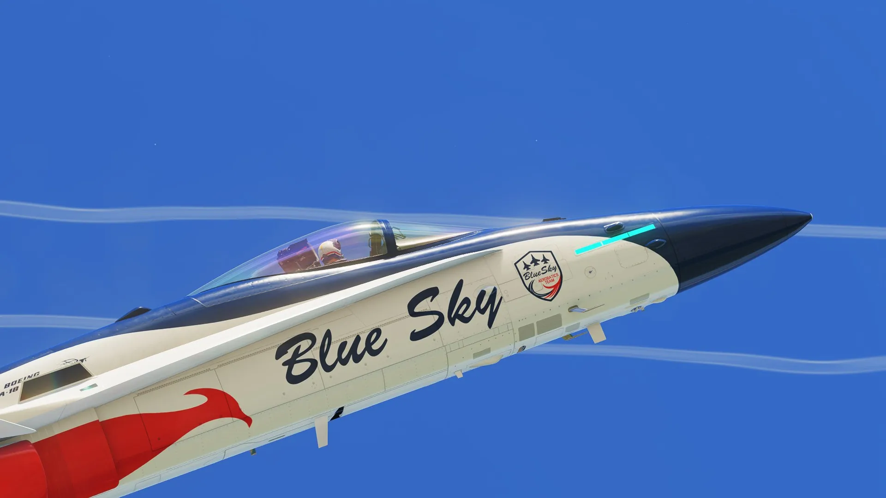
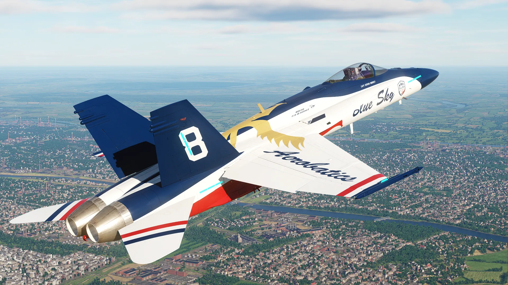

La patrouille de démonstration de Blue Sky France : vol serré, fumigènes, passages bas et changements de formation.

Fuselage blanc, dos bleu nuit et ventre rouge, avec un phénix doré et « Aerobatics » sur l'aile. Numéros de dérive de 1 à 9.
La patrouille recrute parmi les membres du Discord. Il faut posséder le module F/A-18C Hornet et être disponible pour les entraînements en soirée.
Candidater sur Discord →